Hier sind die 120 neuesten von 237 Materialien. Alle im Material-Finder ansehen

Materialpaket Lesespurgeschichten Biologie Klasse 8 – Pflanzen und Pilze: 12 Lesespuren mit Rätselaufgaben, dreifach differenziert

Materialpaket Lesespurgeschichten Biologie Klasse 8 – Tiere: Säugetiere und Vögel: 19 Lesespuren mit Rätselaufgaben, dreifach differenziert
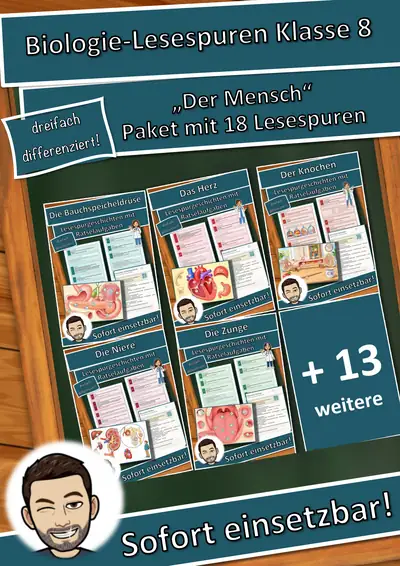
Materialpaket Lesespurgeschichten Biologie Klasse 8 – Der Mensch: 18 Lesespuren mit Rätselaufgaben, dreifach differenziert

Materialpaket Lesespurgeschichten Biologie Klasse 8 – Lebensräume und Ökologie: 11 Lesespuren mit Rätselaufgaben, dreifach differenziert

Materialpaket Lesespurgeschichten Biologie Klasse 8 – Zellen und Bakterien: 5 Lesespuren mit Rätselaufgaben, dreifach differenziert

Lesespur: Winterblues: warum uns im Winter das Licht fehlt – Lesespurgeschichte mit Rätseln (Klasse 8)
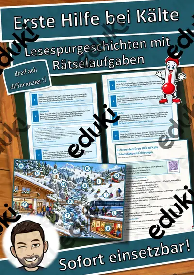
Lesespur: Erste Hilfe bei Kälte: Unterkühlung und Erfrierungen – Lesespurgeschichte mit Rätseln (Klasse 8)

Lesespur: Die Kieme – Lesespurgeschichte mit Rätseln (Klasse 8)

Lesespur: Der Muskel – Lesespurgeschichte mit Rätseln (Klasse 8)

Lesespur: Das Vogelei – Lesespurgeschichte mit Rätseln (Klasse 8)

Lesespur: Die Hecke – Lesespurgeschichte mit Rätseln (Klasse 8)
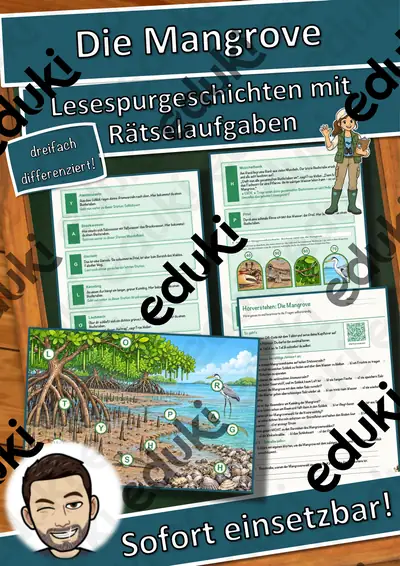
Lesespur: Die Mangrove – Lesespurgeschichte mit Rätseln (Klasse 8)

Lesespur: Der Bergsee – Lesespurgeschichte mit Rätseln (Klasse 8)
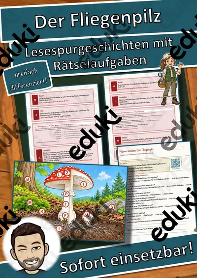
Lesespur: Der Fliegenpilz – Lesespurgeschichte mit Rätseln (Klasse 8)

Lesespur: Der Dachs – Lesespurgeschichte mit Rätseln (Klasse 8)

Lesespur: Der Kranich – Lesespurgeschichte mit Rätseln (Klasse 8)
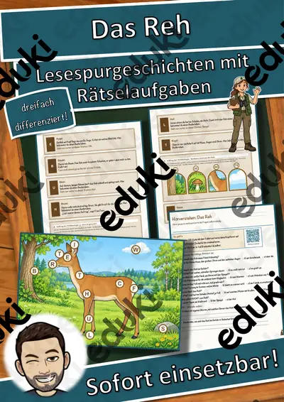
Lesespur: Das Reh – Lesespurgeschichte mit Rätseln (Klasse 8)

Lesespur: Die Amsel – Lesespurgeschichte mit Rätseln (Klasse 8)

Lesespur: Der Apfelbaum – Lesespurgeschichte mit Rätseln (Klasse 8)

Lesespur: Die Ameise – Lesespurgeschichte mit Rätseln (Klasse 8)

Lesespur: Die Eiche – Lesespurgeschichte mit Rätseln (Klasse 8)

Lesespur: Der Biber – Lesespurgeschichte mit Rätseln (Klasse 8)

Lesespur: Der Adler – Lesespurgeschichte mit Rätseln (Klasse 8)

Lesespur: Die Schildkröte – Lesespurgeschichte mit Rätseln (Klasse 8)

Lesespur: Der Hummer – Lesespurgeschichte mit Rätseln (Klasse 8)

Lesespur: Der Tintenfisch – Lesespurgeschichte mit Rätseln (Klasse 8)

Lesespur: Der Mais – Lesespurgeschichte mit Rätseln (Klasse 8)

Lesespur: Der Weizen – Lesespurgeschichte mit Rätseln (Klasse 8)
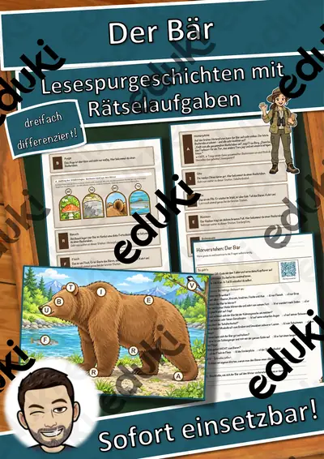
Lesespur: Der Bär – Lesespurgeschichte mit Rätseln (Klasse 8)
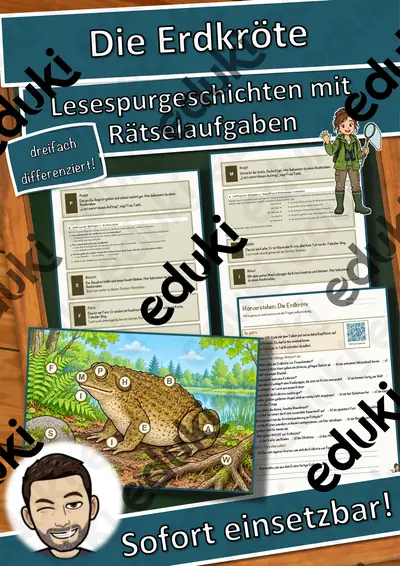
Lesespur: Die Erdkröte – Lesespurgeschichte mit Rätseln (Klasse 8)

Lesespur: Der Hirschkäfer – Lesespurgeschichte mit Rätseln (Klasse 8)

Lesespur: Das Wildschwein – Lesespurgeschichte mit Rätseln (Klasse 8)

Lesespur: Der Wolf – Lesespurgeschichte mit Rätseln (Klasse 8)

Lesespur: Der Hamster – Lesespurgeschichte mit Rätseln (Klasse 8)

Lesespur: Die Heuschrecke – Lesespurgeschichte mit Rätseln (Klasse 8)

Lesespur: Der Luchs – Lesespurgeschichte mit Rätseln (Klasse 8)

Lesespur: Der Lachs – Lesespurgeschichte mit Rätseln (Klasse 8)

Lesespur: Der Delfin – Lesespurgeschichte mit Rätseln (Klasse 8)
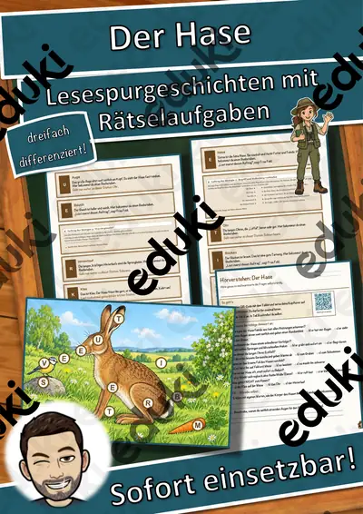
Lesespur: Der Hase – Lesespurgeschichte mit Rätseln (Klasse 8)

Lesespur: Die Sonnenblume – Lesespurgeschichte mit Rätseln (Klasse 8)

Lesespur: Der Feuersalamander – Lesespurgeschichte mit Rätseln (Klasse 8)

Lesespur: Der Hirsch – Lesespurgeschichte mit Rätseln (Klasse 8)

Lesespur: Der Fuchs – Lesespurgeschichte mit Rätseln (Klasse 8)

Lesespur: Der Kaktus – Lesespurgeschichte mit Rätseln (Klasse 8)

Lesespur: Der Storch – Lesespurgeschichte mit Rätseln (Klasse 8)

Lesespur: Das Chamäleon – Lesespurgeschichte mit Rätseln (Klasse 8)

Lesespur: Das Krokodil – Lesespurgeschichte mit Rätseln (Klasse 8)

Lesespur: Der Pinguin – Lesespurgeschichte mit Rätseln (Klasse 8)

Lesespur: Der Hai – Lesespurgeschichte mit Rätseln (Klasse 8)

Lesespur: Der Löwenzahn – Lesespurgeschichte mit Rätseln (Klasse 8)

Lesespur: Die Eule – Lesespurgeschichte mit Rätseln (Klasse 8)

Lesespur: Die Libelle – Lesespurgeschichte mit Rätseln (Klasse 8)

Lesespur: Die Muschel – Lesespurgeschichte mit Rätseln (Klasse 8)

Lesespur: Die Tierzelle – Lesespurgeschichte mit Rätseln (Klasse 8)

Lesespur: Der Dickdarm – Lesespurgeschichte mit Rätseln (Klasse 8)

Lesespur: Die Tulpe – Lesespurgeschichte mit Rätseln (Klasse 8)

Lesespur: Der Regenwurm – Lesespurgeschichte mit Rätseln (Klasse 8)

Lesespur: Der Dünndarm – Lesespurgeschichte mit Rätseln (Klasse 8)
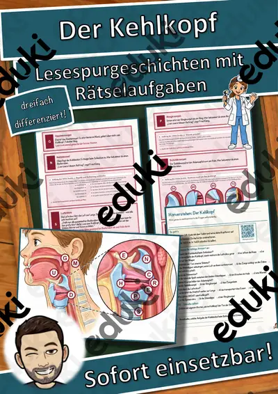
Lesespur: Der Kehlkopf – Lesespurgeschichte mit Rätseln (Klasse 8)

Lesespur: Der Zahn – Lesespurgeschichte mit Rätseln (Klasse 8)

Lesespur: Das Moor – Lesespurgeschichte mit Rätseln (Klasse 8)

Lesespur: Der Knochen – Lesespurgeschichte mit Rätseln (Klasse 8)
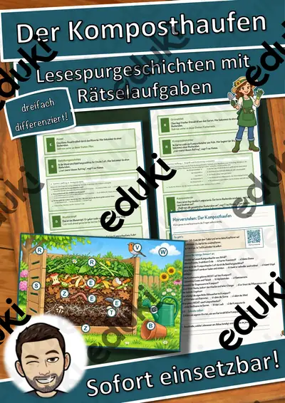
Lesespur: Der Komposthaufen – Lesespurgeschichte mit Rätseln (Klasse 8)
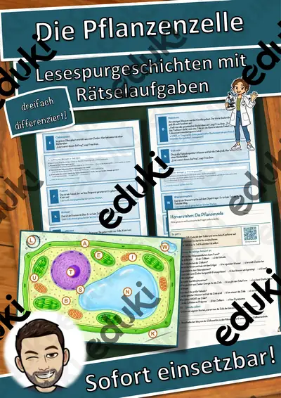
Lesespur: Die Pflanzenzelle – Lesespurgeschichte mit Rätseln (Klasse 8)

Lesespur: Das Bodenprofil – Lesespurgeschichte mit Rätseln (Klasse 8)

Lesespur: Die Kläranlage – Lesespurgeschichte mit Rätseln (Klasse 8)

Lesespur: Die Bakterienzelle – Lesespurgeschichte mit Rätseln (Klasse 8)
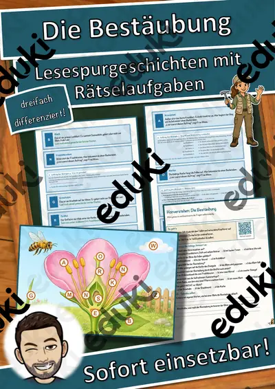
Lesespur: Die Bestäubung – Lesespurgeschichte mit Rätseln (Klasse 9)

Lesespur: Die Lunge – Lesespurgeschichte mit Rätseln (Klasse 8)

Lesespur: Der Schädel – Lesespurgeschichte mit Rätseln (Klasse 8)

Lesespur: Die Fotosynthese – Lesespurgeschichte mit Rätseln (Klasse 8)

Lesespur: Der Magen – Lesespurgeschichte mit Rätseln (Klasse 8)

Lesespur: Die Wurzel – Lesespurgeschichte mit Rätseln (Klasse 8)

Lesespur: Die Bauchspeicheldrüse – Lesespurgeschichte mit Rätseln (Klasse 8)
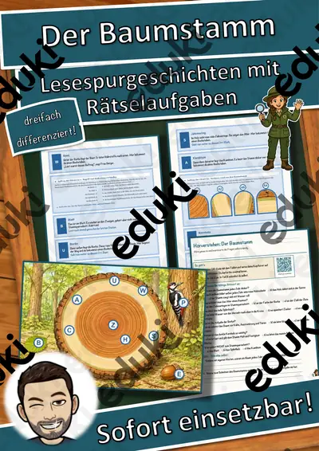
Lesespur: Der Baumstamm – Lesespurgeschichte mit Rätseln (Klasse 8)

Lesespur: Die Zunge – Lesespurgeschichte mit Rätseln (Klasse 8)

Lesespur: Die Nase – Lesespurgeschichte mit Rätseln (Klasse 8)

Lesespur: Die Wirbelsäule – Lesespurgeschichte mit Rätseln (Klasse 8)
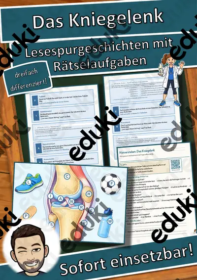
Lesespur: Das Kniegelenk – Lesespurgeschichte mit Rätseln (Klasse 8)

Lesespur: Das Herz – Lesespurgeschichte mit Rätseln (Klasse 8)

Lesespur: Die Biberburg – Lesespurgeschichte mit Rätseln (Klasse 8)

Lesespur: Der Ameisenhaufen – Lesespurgeschichte mit Rätseln (Klasse 8)

Lesespur: Die Haut – Lesespurgeschichte mit Rätseln (Klasse 8)
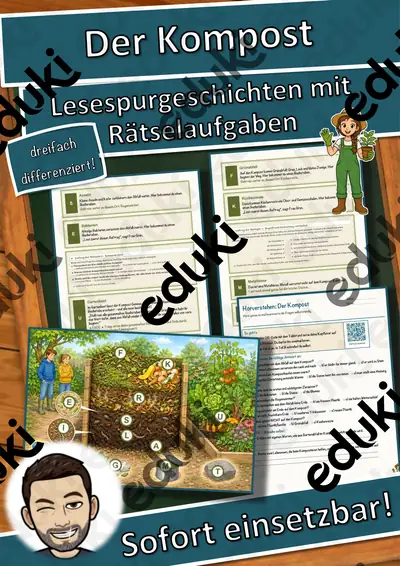
Lesespur: Der Kompost – Lesespurgeschichte mit Rätseln (Klasse 8)

Lesespur: Das Korallenriff – Lesespurgeschichte mit Rätseln (Klasse 8)
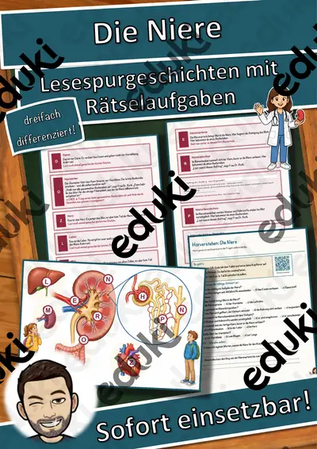
Lesespur: Die Niere – Lesespurgeschichte mit Rätseln (Klasse 8)

Lesespur: Das Immunsystem – Lesespurgeschichte mit Rätseln (Klasse 8)
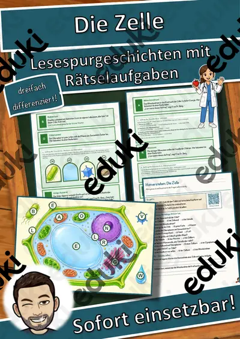
Lesespur: Die Zelle – Lesespurgeschichte mit Rätseln (Klasse 8)

Lesespur: Die Bakterien – Lesespurgeschichte mit Rätseln (Klasse 8)
Die Niere – Prüfungstraining Biologie (Klasse 8)
Die Zähne – Prüfungstraining Biologie (Klasse 8)
Die Zelle – Prüfungstraining Biologie (Klasse 8)
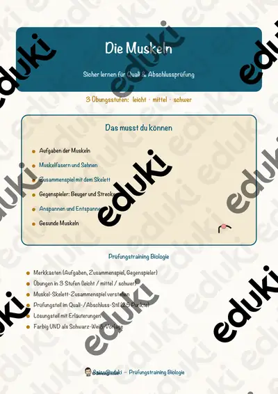
Die Muskeln – Prüfungstraining Biologie (Klasse 8)
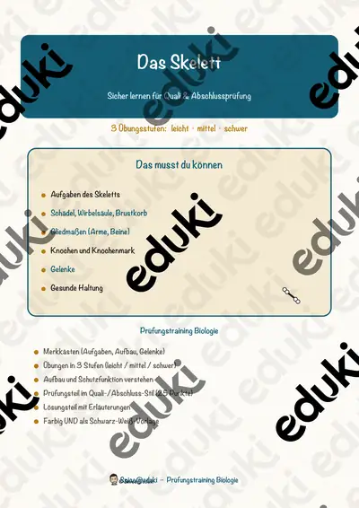
Das Skelett – Prüfungstraining Biologie (Klasse 8)
Die Atmung – Prüfungstraining Biologie (Klasse 8)
Die Verdauung – Prüfungstraining Biologie (Klasse 8)
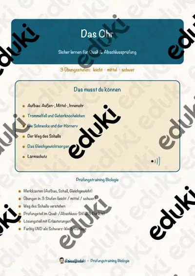
Das Ohr – Prüfungstraining Biologie (Klasse 8)
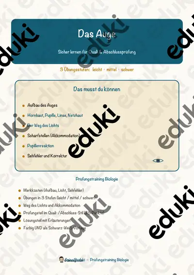
Das Auge – Prüfungstraining Biologie (Klasse 8)
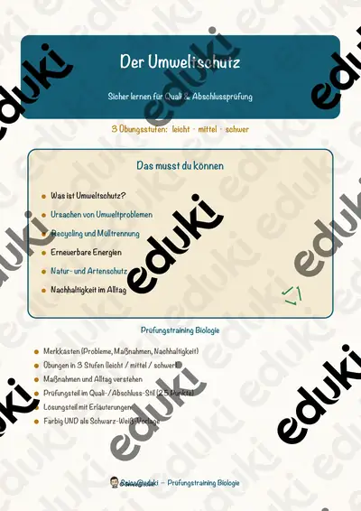
Der Umweltschutz – Prüfungstraining Biologie (Klasse 8)
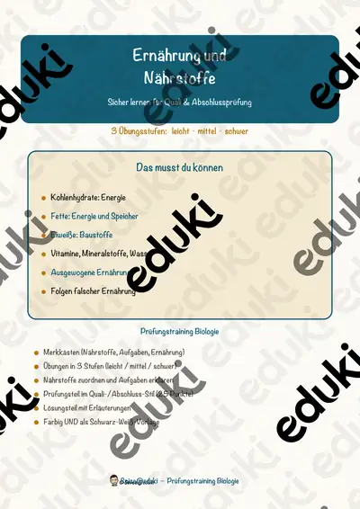
Ernährung und Nährstoffe – Prüfungstraining Biologie (Klasse 8)
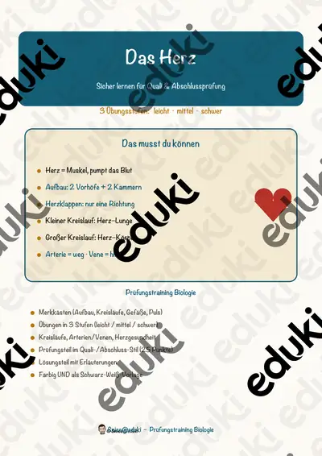
Das Herz – Prüfungstraining Biologie (Klasse 8)
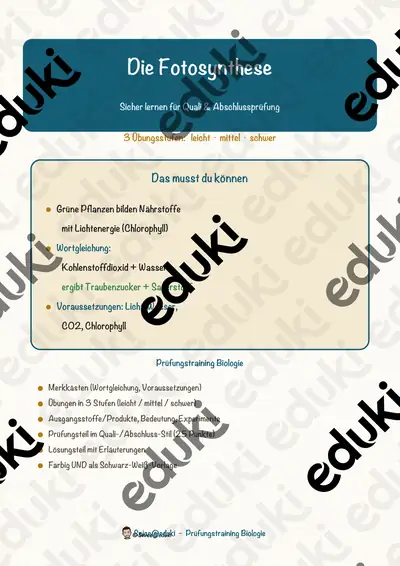
Die Fotosynthese – Prüfungstraining Biologie (Klasse 8)
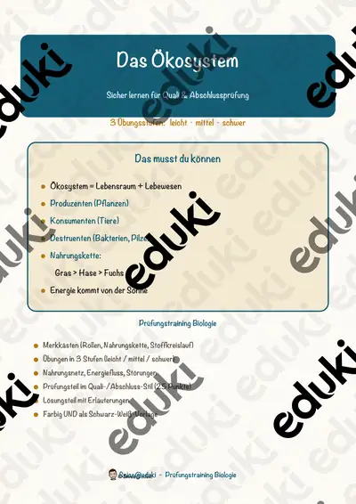
Das Ökosystem – Prüfungstraining Biologie (Klasse 8)

Landkreis Ostprignitz-Ruppin Lückentext mit Wortspeicher Hörverstehen und Suchsel

Landkreis Bad Kreuznach Lückentext mit Wortspeicher Hörverstehen und Suchsel

Donnersbergkreis Lückentext mit Wortspeicher Hörverstehen und Suchsel

Landkreis Celle Lückentext mit Wortspeicher Hörverstehen und Suchsel

Neckar-Odenwald-Kreis Lückentext mit Wortspeicher Hörverstehen und Suchsel

Landkreis Tübingen Lückentext mit Wortspeicher Hörverstehen und Suchsel

Landkreis Sigmaringen Lückentext mit Wortspeicher Hörverstehen und Suchsel

Landkreis Reutlingen Lückentext mit Wortspeicher Hörverstehen und Suchsel

Landkreis Ludwigsburg Lückentext mit Wortspeicher Hörverstehen und Suchsel

Landkreis Heidenheim Lückentext mit Wortspeicher Hörverstehen und Suchsel

Landkreis München Lückentext mit Wortspeicher Hörverstehen und Suchsel

Landkreis Erding Lückentext mit Wortspeicher Hörverstehen und Suchsel

Landkreis Berchtesgadener Land Lückentext mit Wortspeicher Hörverstehen und Suchsel

Landkreis Bayreuth Lückentext mit Wortspeicher Hörverstehen und Suchsel

Landkreis Bad Kissingen Lückentext mit Wortspeicher Hörverstehen und Suchsel

Landkreis Augsburg Lückentext mit Wortspeicher Hörverstehen und Suchsel

Haubentaucher Lückentext mit Wortspeicher Hörverstehen und Suchsel
Keine Materialien gefunden – versuch einen anderen Suchbegriff oder Filter.